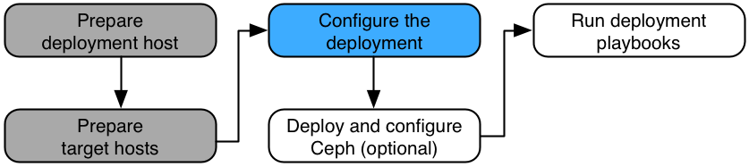

Configure the deployment (required)#
Ansible references some files that contain mandatory and optional configuration directives. Before you can run the Ansible playbooks to install Rackspace Private Cloud Powered By OpenStack (RPCO), you must modify these files to define the target environment. Perform the following required tasks: